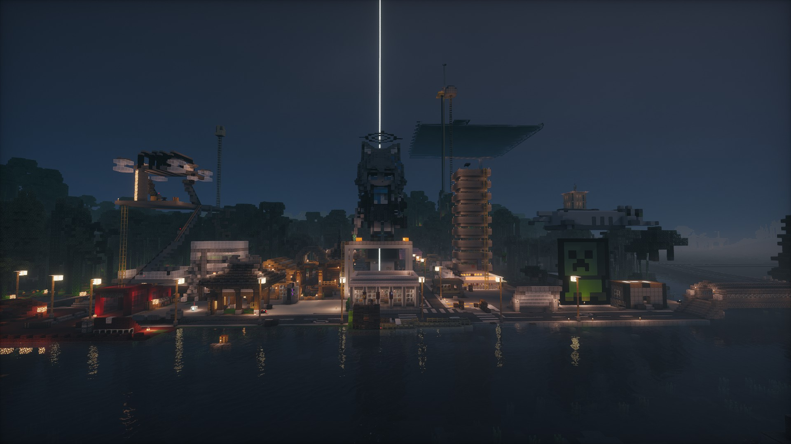
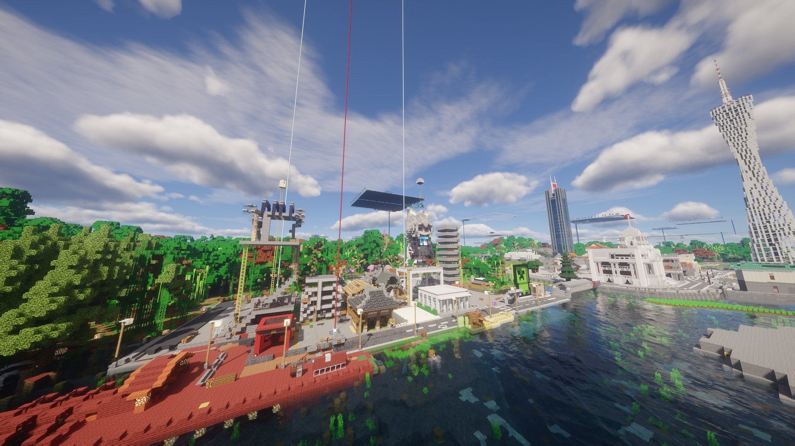

01 · 2026.07.03
联盟核心
佛山 FOSHAN
祖庙、南风古灶、醒狮与石湾陶艺。联盟里建城最早、人口最多的一座， 公共商店、公寓与城市门禁都已落地。新居民通常先到这里落脚， 再决定去其他城市。

01 / 关于联盟
佛山联盟不是一个游戏内建制。EarthMC 里没有"联盟"这个按钮， 八座城市在系统上各自独立，同属大明共和国广东省。 联盟是玩家之间的约定：共享物资与路线，统一建筑风貌，遇到纠纷一起出面。
联盟以佛山为核心。佛山建城最早、人口最多，城内有公共商店、公寓与门禁， 也是新居民落脚的第一站。其余七座城市由佛山的老玩家陆续建立， 分布在北江流域、珠三角外围与粤东沿海。

02 / 城市名录
从 2026 年 7 月到 10 月，三个月里陆续建起八座城市。 每座城都有自己的风景与性格，影像会陆续补充。

祖庙、南风古灶、醒狮与石湾陶艺。联盟里建城最早、人口最多的一座， 公共商店、公寓与城市门禁都已落地。新居民通常先到这里落脚， 再决定去其他城市。

丹霞山与南华寺所在，粤北门户。城市公告只有一句 "North of Canton"， 和这座城市的位置一样干脆。

北江穿城而过，漂流与温泉之乡。公告写着 "Beautiful mounts and rivers here"， 基本上就是这座城的全部介绍。

英西峰林与红茶。公告里明确写着 "under Foshan"， 是联盟里第一座公开表态的卫星城，目前靠试炼密室做自给据点。
城名由市民自定。公告引用"人民就是江山"。 112 区块已全部认领，是联盟里开发得最满的一座。

南澳岛、骑楼与潮汕菜。联盟在粤东的唯一据点， 也是八座城里离佛山最远的一座。

2026 年 10 月建城。

满堂围与车八岭，客家围楼之乡。毗邻风溪谷。 联盟里最年轻的一座，2026 年 10 月 18 日刚刚建城。
数据由 EarthMC 官方 API 读取，截至 2026 年 10 月 20 日。城市规模会随居民增减变化。
03 / 分布
联盟的城市不是均匀铺开的：主体沿北江往上游排开， 向西伸到四会，向东伸到汕头。这个形状决定了物资怎么流动， 也决定了新人该去哪座城。
韶关、清远、英德、始兴。四座城沿北江自下游向上游排列， 是联盟的主体，也是目前区块最集中的一片。
汕头。联盟唯一的海港城市，离佛山最远， 也是联盟与潮汕玩家之间的接口。